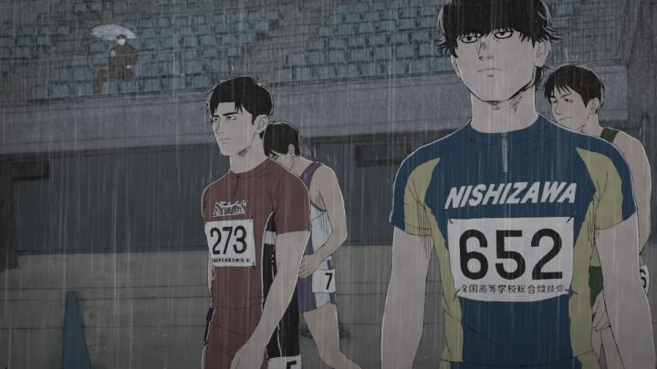

Disclaimer: minor spoilers.Wow, Fall 2025 is a massive year for theatrical anime releases, most of which were shown practically nationwide in both the USA and Canada. They included a record-breaking "Demon Slayer" film, and films from "Chainsaw Man," "Miss Kobayashi's Dragon Maid," "Angel's Egg," "Scarlet," "Virgin Punk," and also... a little film called "100 Meters." And that last one is the one I was perhaps most curious about, because this was from director Kenji Iwaisawa, and his follow-up after the surprise indie gem "On-Gaku - Our Sound." And I was always a sucker for a good sports-drama. It's worth saying up-front that rotoscoping is a significant part of the 2D animation, which Iwaisawa also used for "On-Gaku." The character designs are different this time though, much more like traditional "anime," which is a benefit. The result is a cross between things like "On-Gaku," "The Case of Hana and Alice," "Look Back," and "Ping Pong - The Animation," both in style and tone, while not quite being as extreme in style or tone as any of them. And that's also a benefit. "100 Meters" is a very solid, well-directed, and at times both ambitious yet restrained, sports film.Quickly starting with a 100 meter track-and-field race between professional athletes, the movie then flashes back to the childhood of the lead character, Togashi. In elementary school, he's the fastest sprinter in gym class by a good margin, earning a reputation and friends through his success. A new transfer student named Komiya catches his eye - a sickly, awkward kid, that seems to spend his days after school running down the street endlessly, constantly out of breath. He isn't fast or remotely atheletic, but runs instead as a means to "escape" his lonely life, if only for a moment. Togashi proposes to Komiya that being the best at the 100 meter dash "can solve almost anything," and agrees to spend the following weeks training him to get faster. It works, but Komiya soon transfers away. From there, Togashi's life and career in racing continues over the course of almost two decades, where Komiya reappears as his most challenging rival. All while trying to find the answer to the question: "Why do you run?"... sounds familiar, doesn't it? It's almost exactly the plot of "Ping Pong," but for track-and-field. Maybe this is the common plot structure for a lot of good sports stories - two childhood friends become both allies and rivals in a life-long saga. "100 Meters" also introduces several other characters as it goes on, from seasoned veterans giving career advice, to washed-up senior students trying to get back into it, to new promising juniors, all of whom will race in the final climatic tournament. I can't knock it, the structure works, and it's an entertaining journey. And to its credit, this is all in a relatively lean, self-contained feature film, not a full season of anime. Perhaps the most interesting thing about "100 Meters" is that Togashi is always the main character of focus, going from always winning as a kid, to slowly decreasing in speed with age (even as young as in his twenties when the film ends), and having to deal with the reality of losing, or retiring early due to a serious injury. It's one thing to deal with that early in life, and a completely different thing to deal with it as an adult when your paychecks rely on your performance, after decades of dedicating your life to it, and only it. There aren't a ton of emotional moments in the movie, but when they hit, they hit hard. There's probably something to that to speak to a wider audience beyond sports (giving up on a career or education when you realize too late you have no hope to succeed in it, for example). The story doesn't offer a realistic answer (as expected, this is resolved by striving to "push harder," "don't give up," etc.), but the moments leading up to it still resonante. The animation is surprisingly good. Not quite to the level of the best action anime, which are more flashy and (presumably) don't rely often on reference models, but still good. Consider that we're getting both attractive anime-like character designs, and realistic, detailed motion from live actors captured with rotoscoping. It's a little jarring, but not nearly as much so as the few other anime that also use the rotoscoping technique. Scenes like a girl asking Togashi to show how he runs, bobbing her head as her eyes shyly shift away... or detailed wrinkles in a sports jersey as the competitors line up and bend down to their starting positions... if you said rotoscoping wasn't used, one would assume the talent, time and budget was through the roof. In part because rotoscoping lends itself better to a moving camera shot. There's also a few scenes of frame-by-frame rough shading to highlight dramatic shadows as characters walk out to the track. A standout scene is a longcut, maybe two minutes without a camera change, of a bunch of runners walking out and taking their starting stance in heavy rain. Was any 3D CGI used in this? The 2D shading and outlines make it hard to tell. I'd love to watch a step-by-step breakdown of every shot, but however they accomplished it, "100 Meters" looks great. The only minor thing is it's clear that rotoscoping was not used for animation for when the characters are kids at the start of the film, and the shift in animation quality is noticable (again making assumptions, they probably didn't use child actors to capture motion, but did moreso with adult actors).  In the end, there were only two things that bothered me, but they're noticable enough that I can't ignore them. One is the lack of distinct features in the grounded character designs. Despite Komiya having a distinct, bags-under-eyes deadpan stare, it turned out the same eyes appeared for other characters too. Aside from that, faces are very similar, and true to Japanese style, everyone has black hair. Beards or long hair are usually a givaway, but with multiple time-jumps, appearances drastically change too, some growing new beards and some shaving theirs off. In the first half of the movie, I thought I was seeing the reappearance of character A, only to realize 15 minutes later through conversation that this was character B, and that character A wouldn't come back until later on. This happened to me SEVERAL times throughout the movie. That's an issue when conversations and relationship history, wins and loses and comebacks, matters so much in a drama like this. I'd need a spreadsheet with character names and faces open at all times to fully grasp who was on screen at a given time, and because of the drastic design changes as time passes, even that's not fool-proof. Of course, any other anime could rely on technicolor hair dye and wild costumes to help distinguish everyone, but there's no such help in the grounded world of "100 Meters."The second thing is the ending (SPOILER). Again, I expected that the final climatic race wouldn't actually tell you who won or lost, and that the characters would come to the realization that this wasn't the point. But it feels anticlimatic - you don't watch Football season for four months only to turn off the tv before the final game is called! I'd have loved an extra couple of minutes, maybe an end-credits clip, showing what became of all the atheletes from that final race (not to mention the hanging sword of Damocles: multiple characters on the cusp of permanent leg injuries, which the movie forgets about in those final minutes before the cut to black). It's a cheap escape that hurts what is otherwise compelling writing.All-in-all, "100 Meters" is still a winner that makes track-and-field look exciting. It's a great sports film, and the strong directorial choices in composition, editing, and animation help make it stand out amongst the pack.
- "Ani" More reviews can be found at : https://2danicritic.github.io/ Next review: review_101_Dalmations